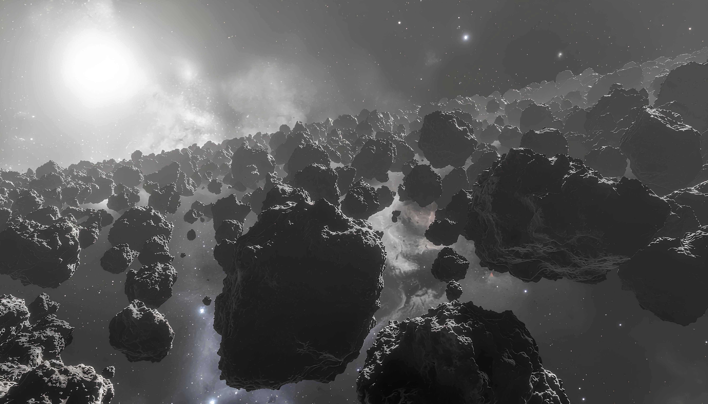
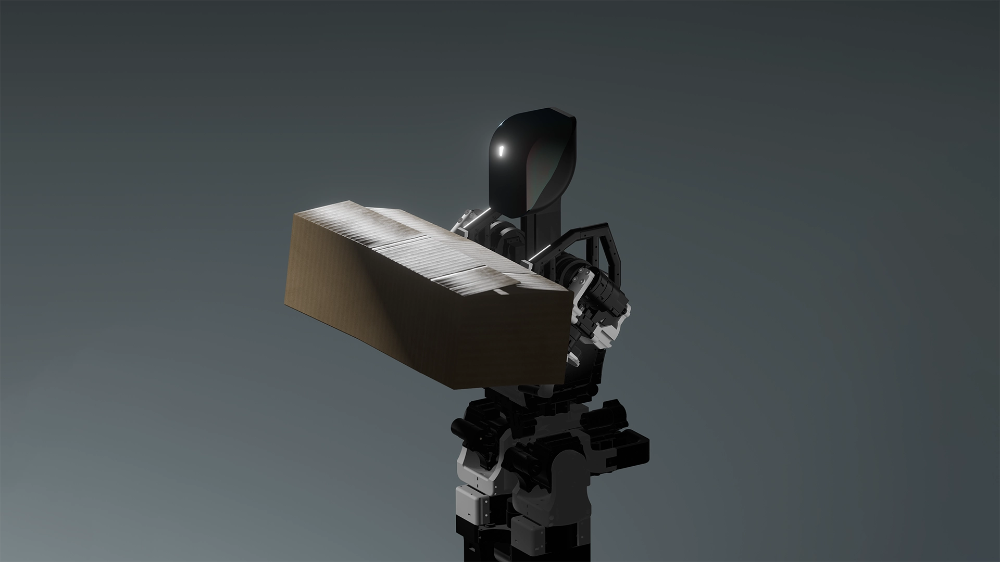

Origin

The universe began approximately 13.8 gigayears ago with the Big Bang — not an explosion in space, but an expansion of space itself. From an extremely hot, dense state, the universe evolved through well-understood physical laws. Within minutes, the first nuclei formed. Over millions of years, matter cooled enough to allow atoms to form, followed by the gravitational collapse of gas into the first stars and galaxies.
Inside these stars, nuclear fusion produced heavier elements — carbon, oxygen, iron — the essential building blocks of planets and life. When massive stars ended their lives in supernova explosions, they scattered these elements across space, enriching future generations of stars and planetary systems. Our solar system, formed around 4.5 Gyr ago, is a direct consequence of this cosmic recycling process.
Early Earth was chemically active and volatile. Through processes studied under abiogenesis, simple organic molecules began forming increasingly complex structures. While the exact pathway from chemistry to biology remains an open question, experiments and evidence suggest that energy sources such as ultraviolet radiation, geothermal activity, and lightning may have driven the synthesis of self-organizing molecular systems.
This transition represents one of the most significant thresholds in the history of the universe: matter becoming capable of storing information, adapting, and evolving. From that point onward, evolution through natural selection began shaping increasingly complex organisms — a process that would unfold over billions of years.
Matter became capable of learning.
Selection
Once life emerged, it diversified through evolution by natural selection — a process in which heritable traits that improve survival and reproduction become more common over generations. Over billions of years, life evolved from single-celled organisms into complex multicellular systems, forming ecosystems of immense diversity.
However, evolution is not a linear progression. It is repeatedly interrupted by catastrophic events. The Cretaceous-Paleogene extinction event, caused by a large asteroid impact approximately 66 million years ago, eliminated nearly 75% of all species on Earth, including the dinosaurs. Yet life persisted, adapted, and continued evolving.
From this long trajectory emerged Homo sapiens — a species defined not by physical dominance, but by cognitive capability. Humans possess the ability to model reality, accumulate knowledge across generations, and extend perception far beyond immediate experience. Through disciplines such as quantum physics, cosmology, and biology, humanity has constructed an understanding of the universe that spans from subatomic particles to cosmic-scale structures.
Unlike previous species, humanity is aware of existential risk. More importantly, we possess the ability to act on that awareness.
Two Forms of Intelligence
This introduces a meaningful distinction in forms of intelligence. The first is survival-driven, found across the animal kingdom, focused on immediate needs such as food, reproduction, and safety. The second is exploratory — the capacity to question, model, and understand the nature of reality, as well as to anticipate future risks and possibilities. Humans uniquely operate at both levels.
This dual capability allows us not only to survive, but to recognize that life itself is fragile. Earth has experienced multiple extinction events, and future risks — ranging from asteroid impacts to climate instability, geological activity, and even self-inflicted threats — remain real. Unlike previous species, we can see these risks coming. And we can choose to act.
The Constraint
To ensure the long-term survival and expansion of life, humanity must operate beyond its current constraints. This includes stabilizing and improving conditions on Earth while developing the capability to sustain life beyond a single planet.
The limiting factor is not just knowledge. It is execution.
Human biological systems impose strict constraints on physical output. The body requires rest, is susceptible to fatigue and injury, and cannot sustain continuous peak performance.
Even with existing automation, a significant portion of global infrastructure still depends on biological labor and rigid industrial systems. Traditional automation can be slow to deploy, expensive to reconfigure, and limited to narrow use-cases. Scaling these systems efficiently across dynamic environments remains a challenge.
Progress is bounded not by ideas, but by the rate of physical execution.
The Response

Vanar Robots is building a new class of systems designed to address these constraints — general-purpose humanoid robots capable of sustained, high-speed, high-precision work across dynamic environments.
Beginning with Generation 1, we aim for near-continuous operation (~24/7) with consistency and adaptability comparable to human labor.
Each system improves over time through accumulated experience, refining execution, reducing errors, and optimizing performance.
Long-term, multiple systems coordinate autonomously, interpreting goals, decomposing tasks, and executing collaboratively. Given high-level objectives like "build a spacecraft," such systems determine the required steps and processes independently.
The human role shifts from execution to intent definition.
The Outcome
The result is a step-change in execution speed. Tasks that once took years become significantly faster. Infrastructure scales rapidly. Complex projects become feasible.
This is not incremental efficiency. It is a change in slope.
By increasing execution capacity, humanity unlocks the ability to build more, faster, and expand beyond Earth.
Speeding up humanity's progress.